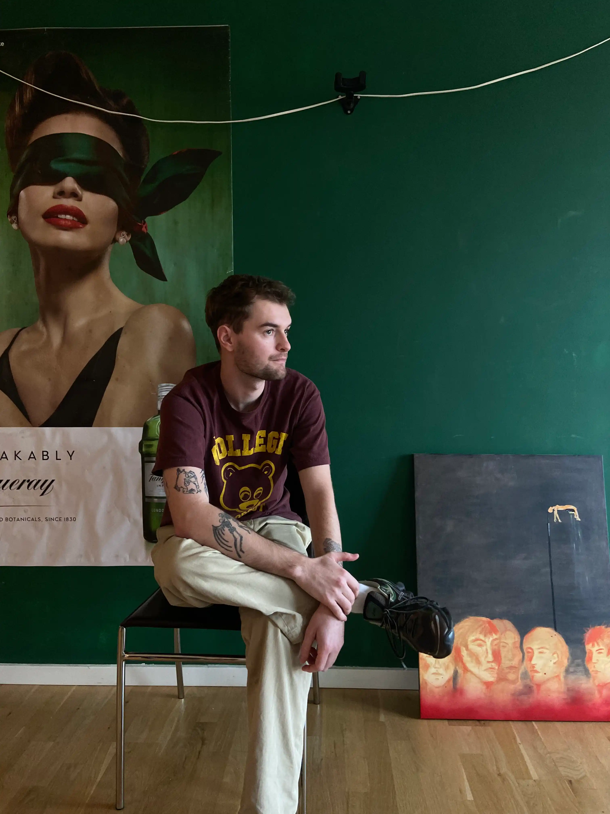

OM MIG
jeg er 24 år og bor i København. Jeg har en stærk passion for kreativitet og æstetik, hvilket afspejler
sig i min
baggrund og mine interesser. Efter at have studeret på designlinjen på Vallekilde, har jeg udviklet en
dyb forståelse
for design og visuel kommunikation.
og det var vallekilde der gjorde, at jeg startede på multimedie og design linjen på kea.
Udover grafisk design bruger jeg min tid på at male og spille guitar, hvilket styrker min kreative
proces og giver mig
nye perspektiver på mine designprojekter. Jeg stræber efter at skabe unikke og inspirerende designs, der
forener
kreativitet med funktionalitet. derudover er jeg tattovør, og har været det i nu 2 år. så derfor bruger
jeg meget tid på
at tegne, og finde på ideer til designs.

For mig er alt der har med æstetik interesant, om det er et menu kort på en reasturant, eller en Martin
scosece film
scene. Jeg går ekstremt meget op i at udtrykke mig kreativt, og det kan være gennem alt. Det er nok også
derfor at jeg
har prøvet så mange forskellige medier af. bla bla bla bla blabla bla bla bla blabla bla bla bla blabla
bla bla bla
blabla bla bla bla blabla bla bla bla blabla bla bla bla blabla bla bla bla blabla bla bla bla blabla
bla bla bla blabla
bla bla bla blabla bla bla bla blabla bla bla bla blabla bla bla bla blabla bla bla bla blabla bla bla
bla blabla bla
bla bla blabla bla bla bla blabla bla bla bla blabla bla bla bla blabla bla bla bla blabla bla bla bla
blabla bla bla
bla blabla bla bla bla blabla bla bla bla blabla bla bla bla blabla bla bla bla bla
GALLERI